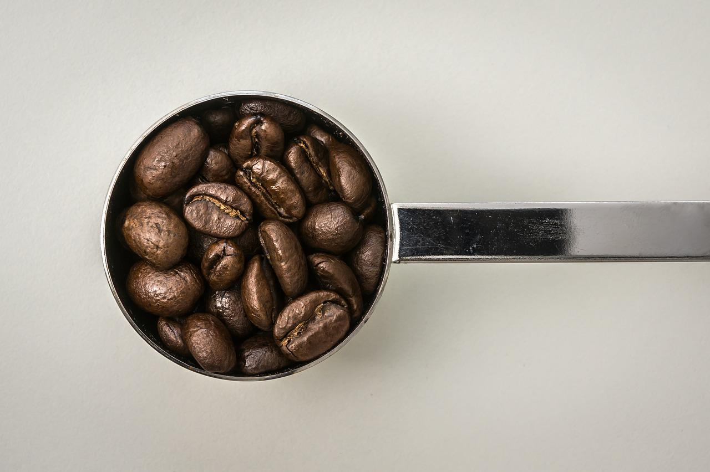

리베리카 정의
리베리카는 장점으로 별로 내세울게 없어 상품화에 실패한 로부스타와 아라비카에 밀린 품종이라고 합니다 열매 크기는 셋 중에서 가장 크고 길쭉해요. '커피 3대 품종'이니 하는 이론을 이야기 할 때나 등장하지만 실제로 만나기는 쉽지 않답니다. 일반적으로 아라비카나 로부스타보다 더 쓰고 향은 약하다고 알려져있어요 그래서 일반적으로 맛이 없고 덕분에 생산량이 적어요. 전 세계 커피 생산량의 1~2% 이하로 알려져있습니다 전체원두의 1퍼센트 이하의 생산량 밖에 안되기때문에 생산량이 적으니 품질도 일정하게 유지하기 힘들어서 상품화가 안되고 대부분 현지에서 소비된다고 해요 그러다보니 일반 커피집은 물론이고, 원두를 좀 따지는 로스팅전문 커피집에서도 소량 입고조차 힘든 원두랍니다. 다만 리베리카 원두가 쓰고 향이 약하다는건 일반적으로 그렇다는 말이고, 예외는 존재해요. 리베리카 원두 중에서도 잘 선별된 원두라면 경우에 따라서는 아라비카 커피중 스페셜티 커피에도 밀리지 않는 강렬한 향미를 자랑하면서 쓴맛은 거의 안 느껴지는 경우도 있다고 합니다 실제 바리스타 대회에서 리베리카 원두를 사용한 경우도 있어요 물론, 이런 녀석은 일반인들 입장에선 원두 구경도 힘들다고 합니다.